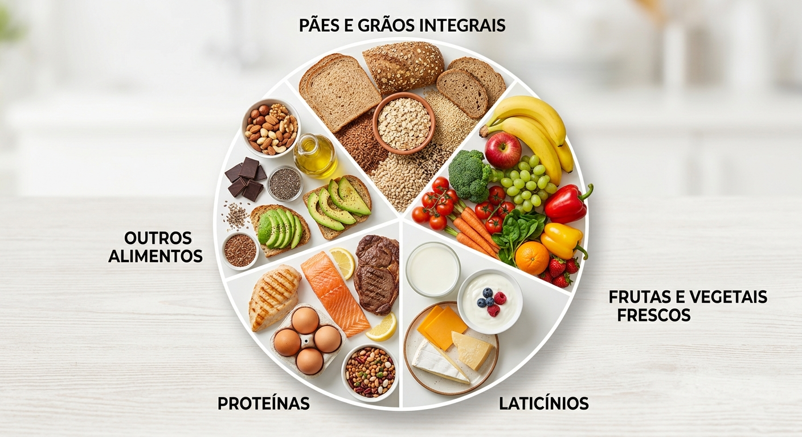

Transforme sua saúde com uma alimentação equilibrada e saborosa!
No Nutribem, acreditamos que comer bem é o primeiro passo para uma vida plena. Oferecemos suporte personalizado para ajudá-lo a alcançar seus objetivos de bem-estar com facilidade e prazer.
Conheça Nossos Serviços
Nossos Serviços
Atendimento Online
Consultas práticas e acessíveis no conforto da sua casa, com o mesmo cuidado da consulta presencial.
Plano Nutricional Personalizado
Cardápios sob medida para suas necessidades, preferências alimentares e rotina diária.
Plano Personalizado de Exercícios
Orientações integradas com atividades físicas para otimizar seus resultados e saúde.
Acompanhamento para Idosos
Cuidado focado na longevidade, preservação da massa magra e bem-estar na melhor idade.
Acompanhamento para Bebês
Introdução alimentar segura, nutritiva e consciente para o crescimento saudável dos pequenos.
Sobre Nós
Conheça nossa filosofia nutricional baseada na variedade dos alimentos e em serviços integrados para sua saúde.
1. Comidas Naturais
Foco em ingredientes frescos e minimamente processados para o seu dia a dia.
2. Medição de Calorias
Cálculos precisos de macronutrientes alinhados aos seus objetivos pessoais.
3. Delivery
Parcerias com marmitas fit e refeições saúdaveis entregues na sua porta.

4. Especialistas
Equipe multidisciplinar pronta para atender todas as fases da sua vida.
5. Eventos
Workshops, palestras e aulas práticas de culinária saudável.
6. Plano Fitness
Estratégias específicas para ganho de massa, hipertrofia e rendimento esportivo.
Dúvidas Frequentes
Como funciona a consulta online?
A consulta é realizada por videochamada. Analisamos seus hábitos, exames e objetivos. Ao final, enviamos seu plano nutricional via aplicativo e e-mail.
Preciso tomar suplementos obrigatoriamente?
Não. A prioridade é sempre a alimentação natural. A suplementação só é recomendada se houver real necessidade identificada em consulta ou exames.
Com que frequência devo fazer o retorno?
O intervalo varia de acordo com seu objetivo, normalmente entre 30 a 45 dias para avaliar a evolução e fazer os ajustes necessários no plano.
O plano aceita restrições alimentares ou dietas específicas?
Sim! Elaboramos planos para vegetarianos, veganos, intolerantes à lactose, celíacos e qualquer outra restrição ou preferência pessoal.